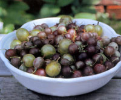
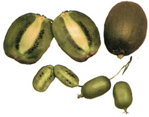

Issue # 195 - December/January 2003
Home Food
Kiwifruit (Actinidia species), also known as Chinese gooseberry, can be grown just about any where in North America. The growing range for the familiar fuzzy brown fruit (hardy to zero degrees, U.S. Department of Agriculture Plant Hardiness Zones 7 to 9) is quite limited, as the fruit needs 225 to 240 frost-free days to ripen. Both the hardy kiwis (hardy to minus 25 degrees, Zones 4 to 9) and the 'Arctic Beauty' kiwi (hardy to minus 40 degrees, Zones 3 to 9) can be grown in most areas, with the first fruits ripening sometime in August, about 125 days after flowering.
This family of fast-growing vines needs several things: a rich, well-drained soil (apply a mulch of compost or aged manure in early-to-late spring); a strong support, such as a sturdy arbor, trellis or fence; consistent summer irrigation; and a male plant of the same species for pollination. (One male plant can pollinate up to eight adjacent females.)
There are several differences among kiwi species. Both hardy and 'Arctic Beauty' kiwifruit bear fruit the size of a large grape. Their flavor is sweeter and more intense than the fuzzy kiwi. Their tender green or reddish skin is totally fuzzless and edible. No peeling is required-just pop them in your mouth!
The vigorous vines of the fuzzy kiwi (Actinidia deliciosa) and the hardy kiwi (Actinidia arguta) enjoy sun, whereas the 'Arctic Beauty' kiwi (Actinidia kolomikta) needs a somewhat shady area. The ornamental vines of the 'Arctic Beauty' are also less vigorous, sporting stunningly variegated leaves of pink, white and green.
Kiwifruits are ready to eat when they begin softening on the vine. You also can ripen picked fruit at room temperature. Kiwis can be stored for months in a refrigerator or cool cellar. They're great fresh or used in ice cream, pies, jams, baked goods, fruit leather or fruit slushes. For preserving, kiwis are best frozen (not dry-packed) with a light honey or sugar syrup.
Gooseberries make delicious pies, jams and jellies as well as chutneys, sauces, fruit vinegars and wine, and can be preserved easily by canning or freezing. The fruit can be pink, red, white, golden-orange and yellow-green, but some aficionados say the richest-flavored are berries with a yellowish hue.
Gooseberries (Ribes species) are easy-care perennial bushes growing 3 to 6 feet tall in Zones 3 to 8. While they perform best in cooler climates, gooseberries are somewhat tolerant of heat. They grow in a wide range of soil types, from sandy to clay. In early spring, place 2 to 4 inches of straw, grass clippings, aged sawdust or wood chips around the plants to control weeds and conserve moisture. Give them full sun to light shade; where summers are hot, give gooseberries afternoon shade. Space plants 3 to 4 feet apart, and keep them watered during dry summers. The self-fertile fruit is produced on new wood and on spurs of 2- to 3-year-old wood.
You can order kiwis and gooseberries now for spring shipment (call for a catalog or visit the Web sites of the mail-order nurseries listed below.
Kiwi and Gooseberry sources
Edible Landscaping (434) 361-9134 www.ediblelandscaping.com
Indiana Berry & Plant Co. (812) 683-3055 www.inberry.com
J.E. Miller Nurseries, Inc. (800) 836-9630 www.millernurseries.com
One Green World (877) 353-4028 www.onegreenworld.com
Raintree Nursery (360) 496-6400 www.raintreenursery.com
|
 LEE REICH (2) Top: Easy-care gooseberries come in several colors. Above: Hardy kiwis (bottom image) are much smaller than the familiar fuzzy kiwi. |
 |
|